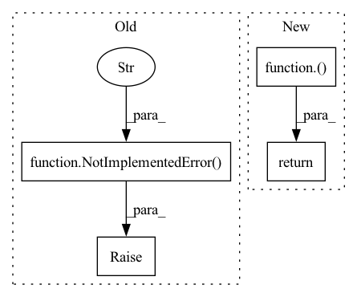

Pattern ID :6820
Before Change
raise NotImplementedError("Not Implemented." )
def mean_squared_error(output, target, is_mean=False, axis=-1, name="mean_squared_error"):
Return the TensorFlow expression of mean-square-error (L2) of two batch of data.After Change
return torch.nn.BCELoss(reduction=reduction)( output, target)
def mean_squared_error(output, target, reduction="mean"):
Return the TensorFlow expression of mean-square-error (L2) of two batch of data.In pattern: SUPERPATTERN
Frequency: 5
Non-data size: 4
Instances Fragment ID: 23196309
Project Name: tensorlayer/tensorlayerx
Commit Name: 21bf2328ccadff5a24520c774d17bfd6d5e05fa4
Time: 2022-01-26
Author: laicheng_vip@163.com
File Name: tensorlayerx/losses/torch_cost.py
M Class Name: AnonimousClass
N Class Name: AnonimousClass
M Method Name: binary_cross_entropy(3)
N Method Name: binary_cross_entropy(3)
M Parent Class:
N Parent Class:
M File Name: tensorlayerx/losses/torch_cost.py
N File Name: tensorlayerx/losses/torch_cost.py
M Start Line: 92
M End Line: 92
N Start Line: 86
N End Line: 86
Before Change
raise NotImplementedError("Not Implemented." )
def normalized_mean_square_error(output, target, axis=-1, name="normalized_mean_squared_error_loss"):
Return the TensorFlow expression of normalized mean-square-error of two distributions.After Change
return torch.nn.MSELoss(reduction=reduction)( output, target)
def normalized_mean_square_error(output, target, reduction="mean"):
Return the TensorFlow expression of normalized mean-square-error of two distributions. Fragment ID: 23196308
Project Name: tensorlayer/tensorlayerx
Commit Name: 21bf2328ccadff5a24520c774d17bfd6d5e05fa4
Time: 2022-01-26
Author: laicheng_vip@163.com
File Name: tensorlayerx/losses/torch_cost.py
M Class Name: AnonimousClass
N Class Name: AnonimousClass
M Method Name: mean_squared_error(3)
N Method Name: mean_squared_error(5)
M Parent Class:
N Parent Class:
M File Name: tensorlayerx/losses/torch_cost.py
N File Name: tensorlayerx/losses/torch_cost.py
M Start Line: 95
M End Line: 119
N Start Line: 105
N End Line: 105
Before Change
raise NotImplementedError("Not Implemented." )
def binary_cross_entropy(output, target, epsilon=1e-8):
Binary cross entropy operation.After Change
return torch.nn.BCEWithLogitsLoss(reduction=reduction)( output, target)
def binary_cross_entropy(output, target, reduction="mean"):
Binary cross entropy operation. Fragment ID: 23196311
Project Name: tensorlayer/tensorlayerx
Commit Name: 21bf2328ccadff5a24520c774d17bfd6d5e05fa4
Time: 2022-01-26
Author: laicheng_vip@163.com
File Name: tensorlayerx/losses/torch_cost.py
M Class Name: AnonimousClass
N Class Name: AnonimousClass
M Method Name: sigmoid_cross_entropy(3)
N Method Name: sigmoid_cross_entropy(2)
M Parent Class:
N Parent Class:
M File Name: tensorlayerx/losses/torch_cost.py
N File Name: tensorlayerx/losses/torch_cost.py
M Start Line: 69
M End Line: 69
N Start Line: 53
N End Line: 67
Before Change
raise NotImplementedError("Not Implemented." )
def sigmoid_cross_entropy(output, target):
Sigmoid cross-entropy operation, see ``tf.ops.sigmoid_cross_entropy_with_logits``.After Change
return torch.nn.CrossEntropyLoss(reduction=reduction)( output, target)
def sigmoid_cross_entropy(output, target, reduction="mean"):
Sigmoid cross-entropy operation, see ``tf.ops.sigmoid_cross_entropy_with_logits``. Fragment ID: 23196310
Project Name: tensorlayer/tensorlayerx
Commit Name: 21bf2328ccadff5a24520c774d17bfd6d5e05fa4
Time: 2022-01-26
Author: laicheng_vip@163.com
File Name: tensorlayerx/losses/torch_cost.py
M Class Name: AnonimousClass
N Class Name: AnonimousClass
M Method Name: softmax_cross_entropy_with_logits(3)
N Method Name: softmax_cross_entropy_with_logits(2)
M Parent Class:
N Parent Class:
M File Name: tensorlayerx/losses/torch_cost.py
N File Name: tensorlayerx/losses/torch_cost.py
M Start Line: 52
M End Line: 52
N Start Line: 27
N End Line: 50
Before Change
grouped_dict = ens_dict
return grouped_dict
else:
raise NotImplementedError(f"Please specify valid group_func." )
class RollingGroup(Group):
group the rolling dictAfter Change
for key, value in grouped_dict.items():
key_l.append(key)
job_l.append(delayed(Group.reduce)(self, value))
return dict(zip(key_l, Parallel(n_jobs=n_jobs, verbose=verbose)( job_l) ))
class RollingGroup(Group): Fragment ID: 23196312
Project Name: microsoft/qlib
Commit Name: cca43cf102c6c18958d1363e22cc6855aaaeb473
Time: 2021-04-11
Author: afe.young@gmail.com
File Name: qlib/model/ens/group.py
M Class Name: Group
N Class Name: Group
M Method Name: __call__(4)
N Method Name: __call__(2)
M Parent Class: Serializable
N Parent Class: Serializable
M File Name: qlib/model/ens/group.py
N File Name: qlib/model/ens/group.py
M Start Line: 33
M End Line: 44
N Start Line: 38
N End Line: 58